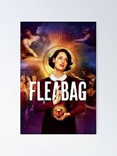
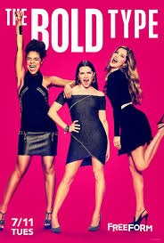
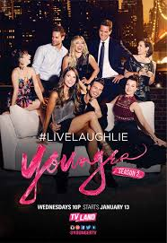
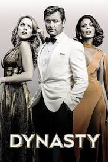

DRAMA
House of Cards (2013-2018)
"friends make the Worst Enemies."

Majority House Whip Francis Underwood takes you on a long journey as he exacts his vengeance on those he feels wronged him - that is, his own cabinet members including the President of the United States himself. Dashing, cunning, methodical and vicious, Frank Underwood along with his equally manipulative yet ambiguous wife, Claire, take Washington by storm through climbing the hierarchical ladder to power in this Americanized recreation of the BBC series of the same name.
Genres : Drama
No. of Seasons: 6
Available on Netflix
Review: 8.7/10 ⭐
Fleabag (2016-2019)
"Positive energy takes work."

A dry-witted woman, known only as Fleabag, has no filter as she navigates life and love in London while trying to cope with tragedy. The angry, grief-riddled woman tries to heal while rejecting anyone who tries to help her, but Fleabag continues to keep up her bravado through it all. Comic actress Phoebe Waller-Bridge stars as the titular character on the series, which is based on Waller-Bridge's 2013 one-woman show of the same name.
Genres : Dark Comedy
No. of Seasons: 2
Available on Amazon Prime
Review: 8.7/10 ⭐
The Marvelous Mrs. Maisel (2017- )
"If women don't realize what's going on in the world, they wont't step in and fix it."

Set in 1950s Manhattan, The Marvelous Mrs. Maisel is a 60-minute dramedy that centers on Miriam "Midge" Maisel, a sunny, energetic, sharp, Jewish girl who had her life mapped out: go to college, find a husband, have kids, and throw the best Yom Kippur break-fasts in town. Soon enough, she finds herself exactly where she had hoped to be, living happily with her husband and two children in the Upper West Side. A woman of her time, Midge is a cheerleader wife to a man who dreams of a stand-up comedy career, but her perfect life is upended when her husband suddenly leaves her for another woman. Utterly unprepared, Midge is left with no choice but to reevaluate her life. When she accidentally stumbles onto the stage at a nightclub, she discovers her own comedic skills and decides to use this newfound talent to help her reinvent her life. The series follows the trajectory of Midge's journey as she pursues a career in the male-dominated, stand-up comedy profession, and transforms from uptown...
Genres : Comedy
No. of Seasons: 3
Available on Amazon Prime
Review: 8.7/10 ⭐
The Bold Type (2017- )
"To having adventures. And making mistakes. To sleeping with the wrong people and the right people. And to unleashing holy hell."

"The Bold Type" is inspired by the life of "Cosmopolitan" editor in chief, Joanna Coles. The show is a glimpse into the outrageous lives and loves of those responsible for a global women's magazine. Their struggles are about finding your identity, managing friendships and getting your heart broken, all while wearing the perfect jeans to flatter any body type.
Genres : Romance
No. of Seasons: 4
Available on Hulu
Review: 8.0/10 ⭐
Younger (2015- )
"It's only a lie if you get caught."

Follows 40-year-old Liza (Foster), a suddenly single mother who tries to get back into the working world, only to find out it's nearly impossible to start at the bottom at her age. When a chance encounter with a 20-something guy at a bar convinces her she looks younger than she is, Liza tries to pass herself off as 26 -- with the help of a makeover, courtesy of her best friend Maggie (Mazar). Armed with new confidence, she lands a job as an assistant to the temperamental Diana (Shor) and teams up with her new co-worker and fellow 20-something Kelsey (Duff) to make it in the career of her dreams.
Genres : Romance,Comedy
No. of Seasons: 6
Available on Hulu and MTV
Review: 7.8/10 ⭐
Dynasty (2017- )
"Vicious.Ambitious.Delicious."

Dynasty is an American prime time television soap opera reboot based on the 1980s series of the same name. Developed by Josh Schwartz ("Gossip Girl"), Stephanie Savage ("Hart of Dixie"), and Sallie Patrick, the new series stars Grant Show as Blake Carrington, Nathalie Kelley as Cristal Flores Carrington, Elizabeth Gillies as Blake's daughter Fallon, and James Mackay as his son Steven. The pilot, which was announced in September 2016, was ordered to series in May 2017. Dynasty premiered on October 11, 2017 on The CW in the US, and on Netflix internationally a day later. As of May 18, 2018, all episodes of Season 1 of Dynasty are now available to stream in the US via Netflix.
Genres : Romance
No. of Seasons: 3
Available on Netflix
Review: 7.3/10 ⭐
Famous In Love (2017-2018)
"Just rip off that tag and go to the door like you own Dolce already!"
An ordinary college student's big break in a Hollywood blockbuster puts her in a tricky love triangle with her roommate and her co-star. Can she maintain her schooling, friendships, and her newfound stardom?
Genres : Romance
No. of Seasons: 2
Available on Amazon Prime
Review: 6.9/10 ⭐
Back